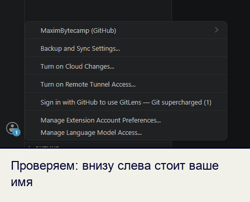
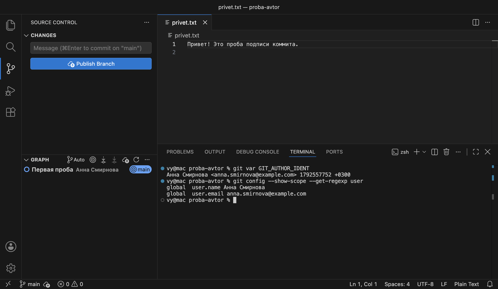
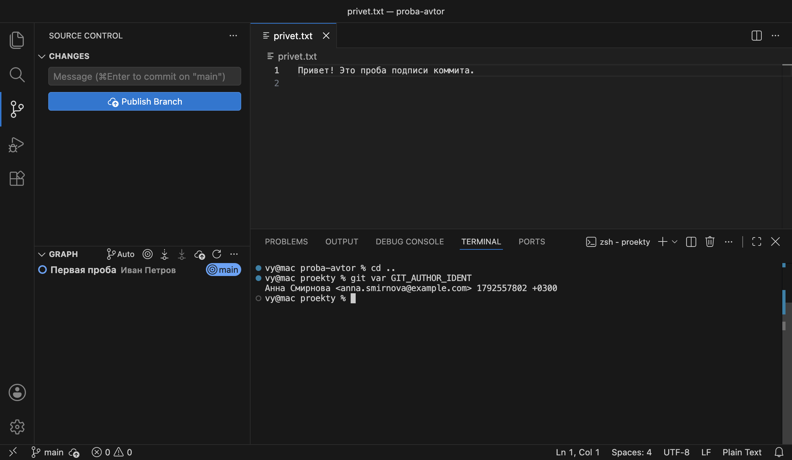
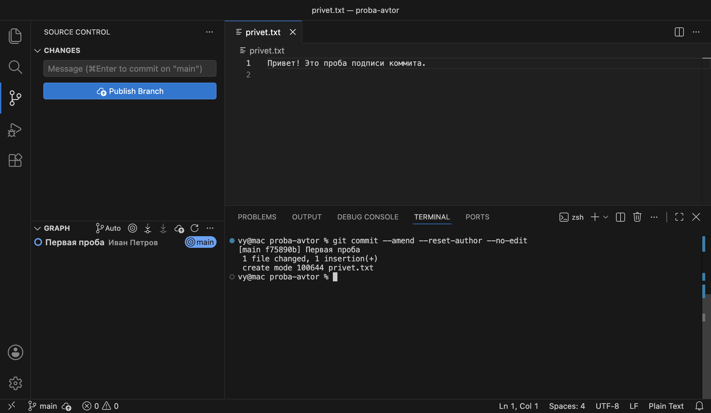

Справочник по Git и GitHub · модуль 1 · что такое контроль версий
Глава 1.4
Чужой компьютер:
от чьего имени коммиты
В главе разобрано, почему на учебном или чужом компьютере коммиты могут подписываться не вашим именем, даже если в VS Code выполнен вход в ваш аккаунт GitHub. Показано, как проверить подпись, на каком уровне настроек она записана, как задать свою подпись только для одного проекта или для всей учётной записи компьютера и как исправить подпись в последнем коммите.
- Категория
- Рабочее место
- Уровень
- Начальный
- Связанные темы
- Имя и почта автора из главы 1.3
- Зачем это знать
- Чтобы работа на любом компьютере была подписана вашим именем
§1Задача главы
В главе 1.3 имя и почта задавались один раз командами с ключом --global. На своём компьютере этого достаточно. В компьютерном классе, на компьютере коллеги или на новом рабочем месте этими командами мог уже воспользоваться другой человек, и тогда его имя стоит в настройках.
Ассоциация: печать на общем столе
В кабинете на столе лежит именная печать предыдущего сотрудника. Если новый сотрудник ставит её на свои документы, все бумаги выглядят как работа предыдущего. Пропуск в здание у нового сотрудника свой, но на подпись документов он не влияет.
Подпись коммита берётся из настроек Git на компьютере — это печать на столе. Вход в аккаунт GitHub в VS Code — пропуск: он даёт право отправлять коммиты на сайт, но подпись в них не меняет.
Где не совпадаетПечать видна сразу, а подпись коммита незаметна, пока не открыть историю. Поэтому её проверяют командой до начала работы.
Подпись коммита — имя и почта автора, записанные внутри коммита. Git берёт их из двух настроек: user.name и user.email. Аккаунт, через который VS Code входит в GitHub, в подпись не попадает. Ниже кадр из главы 1.3: вход выполнен, в меню аккаунта стоит логин, но подпись коммитов от этого не меняется.

Зачем это нужно в работе
- Ваша работа засчитана вам. GitHub связывает коммит с профилем по почте из подписи. С чужой почтой коммит попадёт в чужой профиль или ни в чей.
- История читается правильно. По подписи в истории ищут, кто и когда внёс правку. Чужое имя путает и преподавателя, и команду.
- Чужие данные не утекают. Если вы задали свою подпись на общем компьютере, её нужно убрать, иначе следующий человек будет работать от вашего имени.
Глава показывает такой случай на подготовленном компьютере. В его общих настройках записана Анна Смирнова, а работает за ним Иван Петров — тот же студент, что в главе 1.3. На вашем компьютере имена будут свои. Первым делом нужен проект, на котором видна подпись.
§2Шаг 1. Открыть пробный проект
Подпись записывается в коммиты, поэтому для проверки нужен проект с историей. Такой проект подготовлен: в нём один файл и один коммит, сделанный на компьютере Анны.
Пробный проект для этой главы
Архив содержит папку proba-avtor: файл privet.txt и скрытую папку .git с историей Git — одним коммитом «Первая проба», подписанным Анной Смирновой.
- Распакуйте архив в папку, где будете хранить учебные проекты. Появится папка
proba-avtor. - Откройте её в VS Code: File → Open Folder →
proba-avtor. - Откройте терминал: Ctrl + `. Команды этой главы выполняются в нём.
Папка .git скрытая: в Finder и Проводнике её по умолчанию не видно, но VS Code и Git работают с ней как обычно.
В панели Source Control (значок с веткой на левой полосе), в разделе GRAPH, виден единственный коммит проекта и имя его автора — Анна Смирнова. Этот коммит сделан до вас, его подпись менять не нужно. Проверить нужно другое: чьё имя Git поставит в коммиты, которые сделаете вы.
Что получилось.Папка proba-avtor открыта в VS Code, терминал внизу окна. Дальше проверяем подпись.
§3Шаг 2. Проверить подпись
Подпись, которую получит следующий коммит, показывает команда git var GIT_AUTHOR_IDENT. Коммит для этого делать не нужно.
git var GIT_AUTHOR_IDENT
Анна Смирнова <anna.smirnova@example.com> 1792557752 +0300
В ответе четыре части: имя, почта в угловых скобках, время в секундах, прошедших с 1 января 1970 года, и часовой пояс. Время — текущее, оно встанет в коммит в момент его создания. Имя и почта — чужие: работает Иван Петров, а подпись Анны.

Если на компьютере подпись не задана нигде, Git либо откажется делать коммит, как в главе 1.3, либо соберёт подпись сам. Во втором случае имя берётся из учётной записи компьютера, а почта — из логина и имени компьютера, вида логин@имя-компьютера.local. Так было на macOS при проверке для этой главы. Такая подпись тоже не ваша, и GitHub не свяжет её с вашим профилем.
Что получилось.Следующий коммит был бы подписан Анной Смирновой. Чтобы исправить подпись, нужно знать, где она записана.
§4Шаг 3. Узнать, где записана подпись
Настройки Git хранятся в трёх местах, как правила в организации: общие для всего здания, для отдела и для одного кабинета. Правило кабинета действует только в нём, но там оно сильнее правил отдела и здания.
У Git это три уровня настроек. Системный (system) действует для всех учётных записей компьютера. Глобальный (global) — для всех проектов одной учётной записи; команды с ключом --global из главы 1.3 пишут сюда. Локальный (local) — только для одного проекта, он лежит в его папке .git. Уровень каждой настройки показывает ключ --show-scope:
git config --show-scope --get-regexp user
global user.name Анна Смирнова
global user.email anna.smirnova@example.com
Ключ --get-regexp user оставляет в ответе только настройки, в названии которых есть слово user. Обе строки начинаются со слова global: подпись Анны записана в глобальных настройках учётной записи, под которой открыт компьютер. Локальной подписи в проекте нет.
Когда одна настройка задана на нескольких уровнях, Git берёт её с самого узкого: сначала проект, затем учётная запись, затем весь компьютер. На схеме — что будет, если задать подпись в проекте.
proba-avtor получат подпись Ивана.| Уровень | Ключ команды | Где лежит файл |
|---|---|---|
| Проект | без ключа | Файл config в папке .git проекта |
| Учётная запись | --global | Файл .gitconfig в домашней папке: C:\Users\имя в Windows, /Users/имя в macOS, /home/имя в Linux |
| Весь компьютер | --system | Файл gitconfig в папке установки Git; меняется правами администратора |
Что получилось.Подпись Анны лежит на уровне global. На чужом компьютере эту настройку не трогают и задают свою подпись уровнем выше — в проекте.
§5Шаг 4. Задать подпись для проекта
Команды те же, что в главе 1.3, но без ключа --global. Без ключа Git записывает настройку в проект, в папке которого открыт терминал.
git config user.name "Иван Петров" git config user.email "ivan.petrov@example.com" git config --show-scope --get-regexp user global user.name Анна Смирнова global user.email anna.smirnova@example.com local user.name Иван Петров local user.email ivan.petrov@example.com git var GIT_AUTHOR_IDENT Иван Петров <ivan.petrov@example.com> 1792557775 +0300
Первые две команды ничего не печатают. Третья показывает обе подписи: глобальную Анны и локальную Ивана. Глобальная осталась на месте, но в проекте действует локальная, поэтому git var показывает Ивана Петрова.

local с именем Ивана, git var показывает его подпись.Локальная подпись действует только в этом проекте. Если выйти из папки proba-avtor на уровень выше и проверить снова, подпись опять будет Анны:
cd .. git var GIT_AUTHOR_IDENT Анна Смирнова <anna.smirnova@example.com> 1792557802 +0300

Возвращаемся в папку проекта командой cd proba-avtor.
Что получилось.В проекте proba-avtor коммиты будут подписаны Иваном Петровым. Остаётся коммит, если он уже успел получить чужую подпись.
§6Шаг 5. Исправить подпись в последнем коммите
Бывает, что подпись проверили уже после коммита. Если коммит последний и ещё не отправлен на GitHub, его подпись меняет команда:
git commit --amend --reset-author --no-edit
[main f75890b] Первая проба
1 file changed, 1 insertion(+)
create mode 100644 privet.txt
--amend заменяет последний коммит новым. --reset-author ставит в новый коммит текущую подпись — ту, что показывает git var. --no-edit оставляет сообщение прежним. Файлы в коммите те же, но у него новое имя: было 49ebce1, стало f75890b. Имя коммита вычисляется из его содержимого, а подпись — часть содержимого.

Отправленный на GitHub коммит так не исправляют: на сайте останется его копия с прежней подписью, и истории на компьютере и на сайте разойдутся. Для таких коммитов достаточно настроить подпись, чтобы следующие коммиты были вашими.
Что получилось.Единственный коммит проекта подписан Иваном Петровым. Дальше — свой компьютер, где подпись задают один раз.
§7Шаг 6. Задать подпись для всей учётной записи
На своём компьютере или в своей учётной записи подпись задают глобально, как в главе 1.3. Тогда она действует во всех проектах сразу и не требует настройки в каждом.
git config --global user.name "Иван Петров" git config --global user.email "ivan.petrov@example.com"
Если глобальная подпись чужая, эти команды её заменят. На общем компьютере так делать не стоит: следующий человек получит ваше имя во всех своих проектах. Выбор уровня зависит от того, чей компьютер:
| Где работаете | Какой уровень | Команда |
|---|---|---|
| Свой компьютер, своя учётная запись | Глобальный | git config --global user.name "…" |
| Компьютерный класс, общая учётная запись | Проект | git config user.name "…" в папке проекта |
| Компьютер коллеги или чужая учётная запись | Проект | git config user.name "…" в папке проекта |
| Проект, где нужна другая почта, например рабочая | Проект поверх своей глобальной | git config user.email "…" в папке проекта |
Что получилось.Известно, какой уровень выбрать на своём и на чужом компьютере. Остаётся убрать свои данные, когда работа на чужом компьютере закончена.
§8Шаг 7. Уходя с чужого компьютера
Локальная подпись лежит в папке проекта. Если папку удалить или забрать с собой, подпись уходит вместе с ней. Если папка остаётся на компьютере, подпись убирают командами с ключом --unset:
git config --unset user.name git config --unset user.email
Если на общем компьютере по ошибке задана глобальная подпись, её убирают теми же командами с ключом --global:
git config --global --unset user.name git config --global --unset user.email
Последнее действие — выйти из аккаунта GitHub в VS Code: значок аккаунта внизу левой полосы, ваш логин, Sign Out, как описано в главе 1.3. Иначе следующий человек сможет отправлять коммиты в ваши репозитории.
Что получилось.На чужом компьютере не осталось вашей подписи и входа в ваш аккаунт. Ниже собраны команды главы.
§9Справка: команды и где бывает чужая подпись
| Что нужно | Команда |
|---|---|
| Узнать подпись следующего коммита | git var GIT_AUTHOR_IDENT |
| Узнать, на каком уровне записана подпись | git config --show-scope --get-regexp user |
| Задать подпись для проекта | git config user.name "…", git config user.email "…" |
| Задать подпись для учётной записи | те же команды с --global |
| Исправить подпись последнего неотправленного коммита | git commit --amend --reset-author --no-edit |
| Убрать подпись из проекта | git config --unset user.name, то же для user.email |
| Убрать глобальную подпись | git config --global --unset user.name, то же для user.email |
Чужая или случайная подпись встречается не только за чужим компьютером. Проверять её стоит в любой новой среде:
| Среда | Что бывает с подписью |
|---|---|
| Компьютерный класс | В глобальных настройках общей учётной записи — подпись того, кто работал раньше |
| Новый компьютер или переустановленный Git | Подписи нет, Git собирает её из имени учётной записи и имени компьютера |
| WSL — Linux внутри Windows | У Linux своя домашняя папка и свой .gitconfig: подпись из Windows там не действует |
| Удалённый сервер, куда входят по сети | На сервере свой .gitconfig, часто общий для нескольких человек |
На GitHub коммит попадает в профиль по почте из подписи. Имя в подписи на это не влияет.
| Почта в подписи | Что покажет GitHub |
|---|---|
| Почта из вашего аккаунта GitHub | Коммит с вашим аватаром и ссылкой на ваш профиль |
| Почта из аккаунта другого человека | Коммит с аватаром и профилем этого человека |
| Почта, которой нет ни в одном аккаунте | Имя из подписи без ссылки на профиль, в вашей активности коммита нет |
Если в подписи оказалась ваша вторая почта, её можно добавить в настройках аккаунта GitHub, раздел Emails. После подтверждения GitHub свяжет с профилем и уже сделанные коммиты с этой почтой.
§10Частые вопросы
user.name и user.email.--global, как в главе 1.3.--global.§11Проверьте себя
Как до первого коммита узнать, чьё имя в нём будет?
Выполнить в папке проекта git var GIT_AUTHOR_IDENT. Команда показывает имя и почту, которые получит следующий коммит.
Ответ git config --show-scope --get-regexp user начинается словом global. Что это значит?
Подпись записана в глобальных настройках учётной записи компьютера, в файле .gitconfig домашней папки. Она действует во всех проектах этой учётной записи, где нет своей подписи.
Вы в компьютерном классе. Как подписать свои коммиты, не трогая чужие настройки?
В папке проекта выполнить git config user.name "…" и git config user.email "…" без ключа --global. Проверить командой git var GIT_AUTHOR_IDENT.
Подпись в проекте задана, а за его пределами git var показывает чужое имя. Это ошибка?
Нет. Локальная подпись действует только в своём проекте. За его пределами действует глобальная.
Последний коммит сделан с чужой подписью и ещё не отправлен. Как исправить?
Задать свою подпись и выполнить git commit --amend --reset-author --no-edit. Коммит заменится новым с вашей подписью и новым именем.
Что сделать перед уходом от общего компьютера?
Убрать свою подпись: удалить папку проекта или выполнить git config --unset для user.name и user.email, а если она задана глобально — то же с --global. Выйти из аккаунта GitHub в VS Code.
§12Шпаргалка по главе
git var GIT_AUTHOR_IDENT
git config --show-scope --get-regexp user
local — проект
global — учётная запись
system — весь компьютер
git config user.name "…"
git config user.email "…"
git config --global user.name "…"
git config --global user.email "…"
git commit --amend --reset-author --no-edit
git config --unset user.name
Итог главы
Подпись коммита — имя и почта автора — берётся из настроек Git user.name и user.email. Вход в аккаунт GitHub в VS Code на неё не влияет. Настройки бывают трёх уровней: проект, учётная запись компьютера и весь компьютер; Git берёт значение с самого узкого уровня, где оно задано. Подпись следующего коммита показывает git var GIT_AUTHOR_IDENT, уровень — git config --show-scope --get-regexp user. На своём компьютере подпись задают с ключом --global, на чужом — без ключа, в папке проекта. Последний неотправленный коммит с чужой подписью исправляет git commit --amend --reset-author --no-edit. Уходя с общего компьютера, свою подпись убирают и выходят из аккаунта GitHub.
- Кадры и ответы команд получены в Git версии 2.51.1 и VS Code версии 1.138 на подготовленной учётной записи, где в глобальных настройках записана Анна Смирнова.
- Уровни настроек, ключи
--global,--system,--show-scope,--unset— документация git-config. - Команда
git var GIT_AUTHOR_IDENT— документация git-var. - Ключ
--reset-authorи сборка подписи при отсутствии настроек — документация git-commit, раздел COMMIT INFORMATION. - Связь коммита с профилем по почте — документация GitHub, Setting your commit email address.